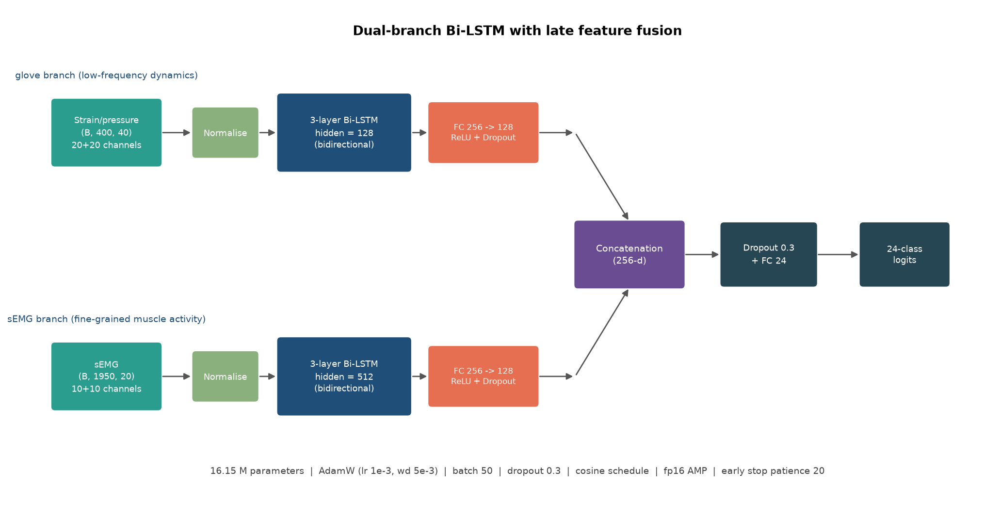
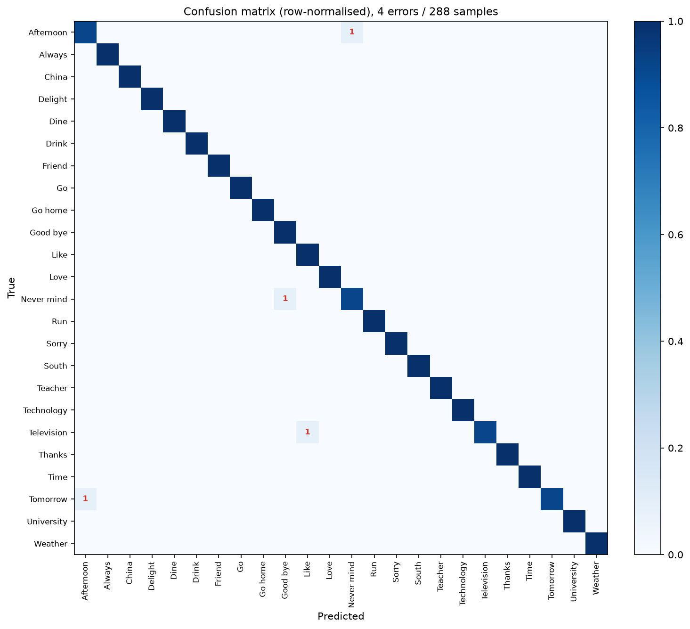
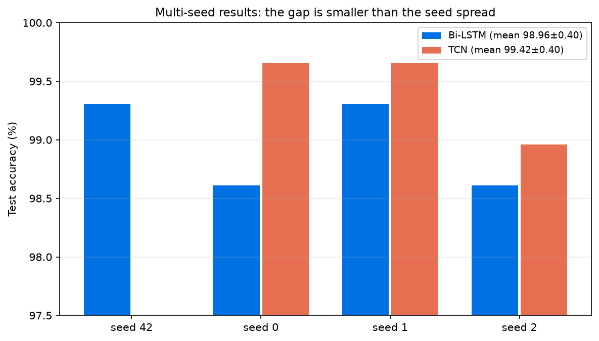
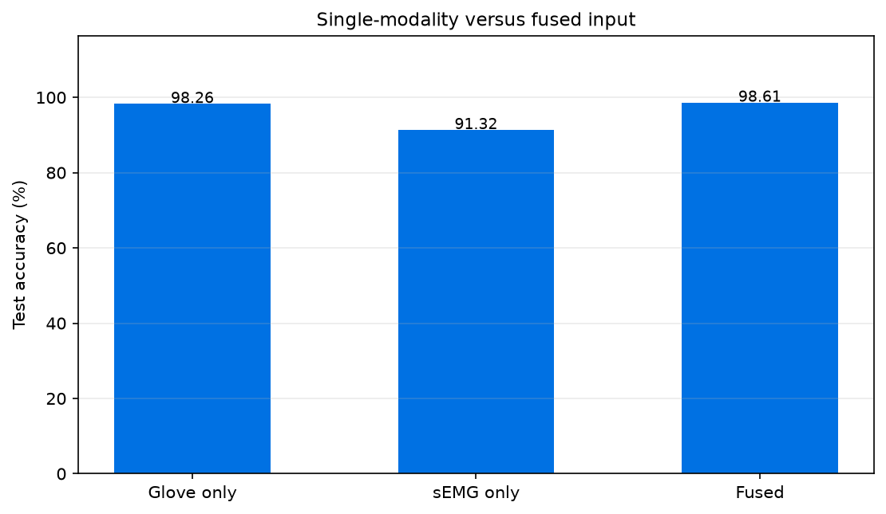
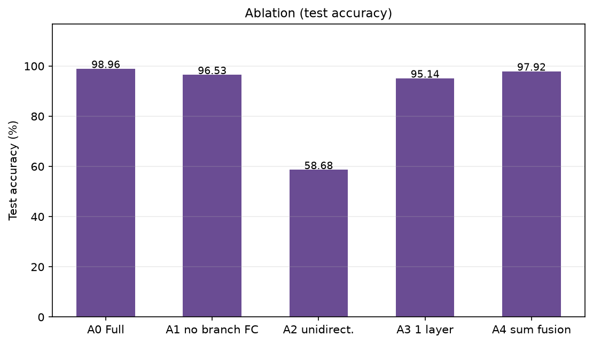
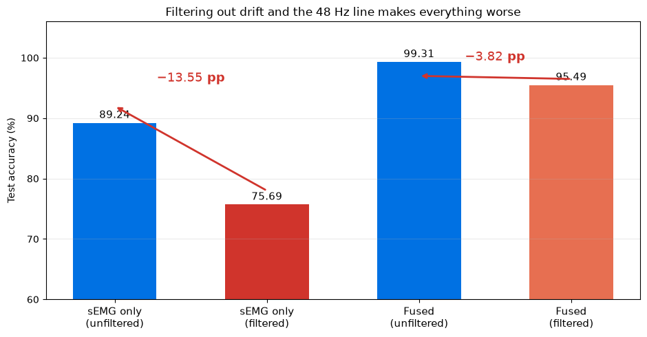
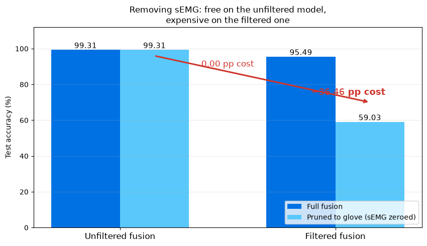
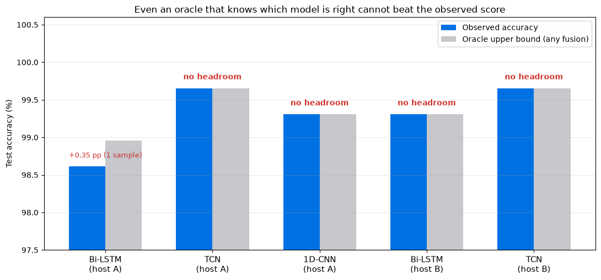

numeric checks pass every table traced to a result file
01Data · full scan of all 2,880 files · no missing keys, no NaN, no Inf
Two modalities, two sampling rates, no resampling
File key
Modality
Shape
Rate
Duration
res1 / res2
left / right strain–pressure
2 × (20, 400)
200 Hz
2.00 s
muscle1 / muscle2
left / right sEMG
2 × (10, 1950)
1000 Hz
1.95 s
Concatenated
glove (B, 400, 40) · sEMG (B, 1950, 20)
—
—
—
Left and right sides are concatenated on the channel axis, matching the reference formulation
(400×40 glove, 1950×20 sEMG). The two modalities differ by 5× in rate and are never resampled onto a common grid.
01Data · the rate mismatch drives the architecture
A 5× rate difference is why the branches never share a timeline
01Data · order of operations is not cosmetic
Clip first, then standardise — reversing the two breaks it
The split is file-level, and identical on both machines
2,304 / 288 / 288
train · validation · test every class contributes 96 / 12 / 12
.pkl
the unit of splitting one recording never spans two splits
1×
the test split is evaluated once, after training has stopped
Split file hash
51c86320ae163e8a2ae41a0467f0e0f2 — 81,627 bytes, produced independently on each host and compared
Statistics source
clip bounds and mean/std taken from the 2,304 training files only
Consistency checks
index sets pairwise disjoint; union exactly 2,880; metadata labels agree with the data arrays
01Data · measured, not assumed · glove features, cosine similarity
27.4% of test samples have a near-twin in the training set
Near-duplicate audit
Test samples with a train neighbour at cos ≥ 0.999
79 / 288 = 27.4%
Class agreement of those pairs
100% same class
Accuracy on the near-duplicate subset
100.00%
Accuracy on the rest
98.09%
Inflation of overall accuracy — fusion
+0.52 pp
Inflation — sEMG only
+1.82 pp
Reading
The same gesture is performed 120 times. Under a random split, some takes land on either side of the boundary.
This is a property of repeated-trial data, not a defect in the splitting code — the three index sets are provably disjoint.
We report it rather than remove it, because the reference protocol is a random 8:1:1 split. Removing it would make our numbers incomparable.
Consequence: single-run differences below ≈ 0.7 pp are not resolvable.
02Method · figure generated from the model definition
Dual-branch Bi-LSTM, convolution-free from end to end

02Method · training configuration matches the reference paper
The reference batch size fits only with fp16
50
reference batch size reproduced exactly, not approximated
10.66 GB
peak memory in fp32 does not fit an 8 GB card
5.46 GB
peak memory with fp16 AMP enables the reference batch
1e-3
AdamW learning rate cosine annealed, wd 5e-3
20
early-stopping patience gradient clipping at norm 5.0
0.3
dropout before the classifier reference value, kept
02Method · reproducibility control, not an accident
Same seed, same code — a different GPU still diverges
Item
Host A
Host B
GPU
RTX 4070 Laptop, 8 GB
RTX 4080 SUPER, 32 GB
Software
Python 3.13 · PyTorch 2.9.1+cu126
identical
Split file
51c86320…
byte-identical
Test accuracy, seed 42
98.61%
99.31%
Epoch-1 validation accuracy
18.06%
21.88%
The trajectories diverge from the first epoch. The cause is algorithm selection inside cuDNN,
which depends on the GPU and changes floating-point accumulation order. The 0.70 pp gap equals two test samples
and sits inside the ±1.2 pp confidence interval of a 288-sample set.
Consequence for this work: every horizontal comparison is drawn within one host, and conclusions that
depend on randomness rest on multi-seed statistics — never on cross-host differences.
03Results · representative fusion run · host A, seed 42, 100-epoch budget
Four errors out of 288 — and all four were predicted

The four errors
Television → Like class-pair Pearson r = 0.857
Tomorrow → Afternoon
Never mind → Good bye
Afternoon → Never mind
Every error falls inside a class pair that a pre-training similarity analysis had already flagged as most
confusable — the confusion is a property of the sensor signature, not of the training run.
03Results · 4 seeds for Bi-LSTM, 3 for TCN · host B, 60-epoch budget
The architectures are tied: the gap is smaller than the seed spread

Model
Mean
Std
Range
Bi-LSTM, 4 seeds
98.96%
0.40 pp
0.69 pp
TCN, 3 seeds
99.42%
0.40 pp
0.69 pp
Difference of means 0.46 pp < 0.40 pp seed standard deviation — the right description
is "comparable", not "one is better".
TCN reaches the same accuracy with 0.30 M parameters against 16.15 M, and converges in 5–6 epochs
instead of 34–37. It also hit 100.00% validation accuracy in all three seeds.
04Experiments · identical settings, only the input changes
Fusion buys 0.35 pp here — the paper reports 15.9

Input
This work
Paper
sEMG only
91.32%
88.02%
Glove only
98.26%
83.75%
Fused
98.61%
99.65%
The ordering agrees with the paper. What differs is the glove baseline: 98.26% here against 83.75% there.
With one branch already at 98%, the second branch has almost nothing left to add.
04Experiments · the three individually-best values, combined
Individually optimal does not compose
Configuration
LR
Batch
Dropout
Test
Reference
1e-3
50
0.3
98.61%
Best batch size
1e-3
32
0.3
99.31%
Best learning rate
2e-3
50
0.3
98.96%
Best dropout
1e-3
50
0.1
99.31%
All three combined
2e-3
32
0.1
98.26%
The combination lands below every individual setting. Low dropout plus a higher learning rate
lets the model memorise the training split: final-epoch training accuracy reaches 100.00% while validation
stalls at 96.88%. We therefore adopt the reference setting with only the batch size changed.
04Experiments · one component removed at a time
Branch FC and temporal depth carry the ablation

Variant
Δ
A0 Full model
98.96%
A1 Remove branch FC layers
−2.43 pp
A3 Three layers → one
−3.82 pp
A4 Concat → sum
−1.04 pp
A2 Bidirectional → unidirectional
58.68%
A2 is not evidence that bidirectionality matters: its training accuracy also stalls
at 57%, so it is underfitting, not failing to generalise. We record it as an optimisation difficulty of
single-direction LSTMs on 1,950-step sequences.
Zeroing the sEMG input leaves all 288 predictions unchanged — not the same error count, the same labels sample by sample.
Zeroing the glove input drops accuracy to 4.17% — exactly chance for 24 classes — and the model emits one single class for every input.
The fitted "multimodal fusion" model is functionally a glove-only classifier. The sEMG branch contributes exactly zero.
This does not contradict the 89.24% sEMG-only result:
the signal carries information — the fusion architecture simply never learns to use it.
04Experiments · forcing the model to rely on sEMG during training
Forced to use sEMG, the optimiser gives up 25% of the data instead
Modality-dropout probability
Test
Glove only
Identical predictions
0 — baseline
99.31%
99.31%
288 / 288
0.30
98.96%
98.96%
288 / 288
0.50
98.61%
98.61%
288 / 288
At p = 0.5, a quarter of all training samples have the glove input zeroed and must be classified from sEMG alone.
The resulting model still ignores sEMG at inference.
Its final training accuracy is 0.7617 — exactly what you get if the 75% of samples with both modalities visible are
classified perfectly and the 25% with a zeroed glove input are not:
0.75 × 100% + 0.25 × 4% ≈ 0.76.
The branch is not under-trained. It is not learnable through this optimisation path at this data scale.
05Mechanism · band-pass 20–450 Hz + notches at 48.17 Hz and harmonics
Filtering out the "noise" costs 13.55 pp

sEMG energy by band
Before
After
1–20 Hz drift
45.9%
2.5%
48 Hz interference line
18.7%
0.4%
51–450 Hz muscle band
11.2%
40.3%
The filter did exactly what it was
designed to do. The assumption behind it was wrong: the low-frequency content is discriminative, not noise.
05Mechanism · the same pruning test, on the filtered model
Filtering makes sEMG usable — and the model worse

Pruning cost of removing sEMG
Unfiltered fusion
+0.00 pp
Filtered fusion
−36.46 pp
Filtering changes the dynamics: the filtered model does integrate sEMG —
pruning it to the glove branch drops accuracy from 95.49% to 59.03%.
But it integrates a weaker modality (75.69% standalone against 89.24%), so overall accuracy falls.
This separates two questions that raw accuracy conflates: whether a branch can be used,
and whether using it helps.
05Mechanism · hit if either model is right — unreachable by any fusion rule
Even an oracle cannot beat the observed score

What the bound rules out
In 4 of 5 configurations the oracle equals the observed accuracy: no correction to the fusion mechanism can improve it.
The single exception has 1 sample (0.35 pp) of headroom — below the 0.40 pp seed standard deviation.
Two baseline errors are also errors for the sEMG model; meanwhile 29 samples (10.1%) that the baseline gets right are wrong for sEMG.
Involving sEMG therefore risks losing accuracy rather than gaining it.
05Mechanism · why the second branch never learns
Why: the dominant-modality trap
06Conclusion · what we can and cannot claim
Four limitations, two already answered by experiment
Known limits
Statistical resolution 288 test samples resolve to ≈ ±1 pp; measured seed spread is 0.40 pp
Near-duplicate inflation 27.4% of test samples have a near-twin → +0.52 pp optimistic
Unresolved paper gap their single-modality protocol was not available; the 14.5 pp glove gap stands unexplained
Cross-GPU drift same seed, different GPU → different trajectory; bitwise reproduction would cost throughput
Remedies — tested, not assumed
✕ Filtering sEMG −13.55 pp on sEMG-only; the low-frequency content is signal
✕ Modality dropout cannot make the branch usable at any probability tried
✕ Better fusion training oracle headroom is 0.00 pp in 4 of 5 configurations
→ Next a dataset where the dominant modality leaves measurable headroom; group-aware splits for repeated-trial data
Ceiling: oracle headroom is 0.00 ppin 4 of 5 configurations
The paper's +15.9 pp fusion gain does not reproduce here — not because the fusion is implemented
wrong, but because the glove modality already solves the task. That is a dominant-modality regime, and it is measurable before
any training: the oracle bound costs one script and no GPU time.
Thank you
24 classes · two modalities · five experiment groups
Every table in this deck traces to a result file in the repository